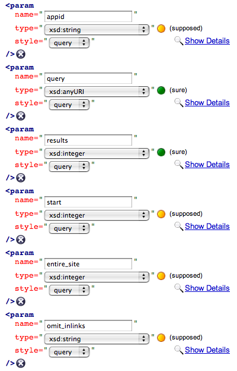

© 2007 by Thomas Steiner (tomac(AT)google[DOT]com) and the REST Describe & Compile community. For more details please consult http://code.google.com/p/rest-api-code-gen.
REST Describe & Compile is an editor and a compiler for (REST) Web Services that are described in Sun engineer Marc Hadley's Web Application Description Language, or short WADL. In order to use REST Describe & Compile you do not necessarily need to understand what WADL is, it is a good idea to have heard at least of the basics though. In consequence, in the following let me explain the absolute minimum of what I consider good to know.
In the SOAP world there is WSDL, and especially there is WSDL2Java, a tool maintained by the Apache Axis folks which will build Java proxies and skeletons for services with WSDL descriptions, so in theory you can get the client-side proxy for free.
In contrast, in the REST world there was no WSDL until WSDL 2.0. In practice adoption of WSDL 2.0 is still in its (not so promising) infancy. Generally WSDL is considered hard to learn, understand, and implement. For these reasons Marc Hadley has published his WADL specification, intended to "provide a simple alternative to WSDL for use with XML/HTTP Web applications." (citing Marc Hadley's initial WADL announcement on his blog).
On the WADL developer site Marc Hadley maintains a command line tool named WADL2Java. The ambitious goal of REST Describe & Compile is to provide sort of WADL2Anything. So what REST Describe & Compile does is that it:
There are two types of users for REST Describe & Compile:
If there is a software program that addresses your needs, i.e. you must use it because it does a certain task pretty well, you have an interest in using the software. However, things get much smoother when the interest comes along with fun. Then interest gets paired with motivation. REST Describe & Compile is not a command line tool like WSDL2Java, or WADL2Java. I am not saying that one cannot have fun with these command line tools, it is just that me personally, I hate the command line. It simply is not my way of thinking. I love GUIs, and so I have created REST Describe & Compile from the first working beta release on with an "ajaxy" GUI, using Google Web Toolkit. This allows the software to react in a completely interactive way, you can change a WADL detail, and see the effect on the generated code right away.
REST APIs are documented in a human-readable, textual way, a set of HTML files being the most common choice of API providers. To a machine, this documentation is worthless. However, in most cases this documentation is enriched with sample requests that give the reader an impression of how to form valid requests. The quality and the expressiveness of these sample requests are a key factor in the WADL creation process. The application is based on the idea that creating a description for a Web Service should be a rather simple task given the information already contained in requests. Let us take a very simple imaginary online bookmarking Web Service to make the idea clear:
GET http://bookmarks-online.com/api/v1/bookmarks?userId=tom&tags=rest&limit=10
Simply by looking at the URI we can extract the following information:
GET: the HTTP method of this operation is GET.http://bookmarks-online.com: there is a Web Service at this base address./api/v1/: this is the path to access the service components.bookmarks: there is an operation that manages your bookmarks.?userId=tom&tags=rest&limit=10: it takes three arguments, "userId", "tags", and "limit". Having a closer look at the parameters, we could guess that "userId" and "tags" are both strings, and that "limit" expects an integer value.
All this information just from one sample request. This is basically what the REST Describe approach is about.
To answer this question, let us have a closer look at the example above, and see how this request maps to WADL. As you can see from the corresponding colors, the structure of the WADL document is closely related to the structure of the URI (mouseover the colored items to see the relations):
A sample request:
GET http://bookmarks-online.com/api/v1/bookmarks?userId=tom&tags=rest&limit=10
And its corresponding WADL representation:
<?xml version="1.0" encoding="utf-8"?>
<application
xmlns:xsi="http://www.w3.org/2001/XMLSchema-instance"
xmlns:xsd="http://www.w3.org/2001/XMLSchema"
xsi:schemaLocation="http://research.sun.com/wadl/2006/10 wadl.xsd"
xmlns="http://research.sun.com/wadl/2006/10"
>
<resources base="http://bookmarks-online.com/">
<resource path="api/v1/bookmarks">
<method name="GET">
<request>
<param name="userId" type="xsd:string" style="query" />
<param name="tags" type="xsd:string" style="query" />
<param name="limit" type="xsd:integer" style="query" />
</request>
</method>
</resources>
</application>
If you examine the WADL document in more detail, you can see that the only part that is not directly mappable to the URI is the information regarding the parameter types. In the request the types are represented by a concrete value (e.g. the integer value 10), whereas in the WADL the type is specified in an abstract way (e.g. xsd:integer). What REST Describe & Compile does to close this gap is to estimate the types based on a heuristic approach that takes into consideration both the parameter name and value.
In the following tutorial I assume that for the REST API that we want to use there is no WADL file available, it thus needs to be generated during the process. Let us give Yahoo's Inbound Links API a try. This API responds to the question who links to a certain URL.
First, we navigate to the API's textual documentation where a clickable sample request can be found (click it to check the API directly in your browser: http://search.yahooapis.com/SiteExplorerService...).
Based on the description and expanding the existing sample request, we create the following more expressive request URI:
http://search.yahooapis.com/SiteExplorerService/V1/inlinkData?
appid=YahooDemo&
query=http://search.yahooapis.com&
results=100&
start=1&
entire_site=1&
omit_inlinks=domain&
output=xml
Then we copy this request URI and paste it into the textbox Request Sample in the application REST Describe & Compile and hit the "Analyze" button. This results in a WADL tree being generated:
Think back what we have learnt before: the only thing in the WADL file that is not directly mappable to the request URI is the types of the parameters. So let us examine what REST Describe & Compile has found out:
|

(Type estimation results)
|
|
So all in all, the estimation rate is far from being perfect. The good news is: this does not matter much :-)
Domain-specific custom types like the omit_links one cannot be detected from a client-side-only analysis as we would have to read the remote schema (if available at all). This is not allowed because of the Same Origin Policy. However, we can safely treat these parameters as strings instead. The query parameter was mis-estimated to be xsd:anyURI. Well, it has a value of http://search.yahooapis.com, so no big surprise. The API documentation states that this should be string, but this API is about inbound links, so the target must be a URI, right? So no problem treating it like one.
The two results and start parameters were correctly identified as integers, however, the type estimation quality for the latter parameter just being "supposed", and not "sure". Why is this so? The response is the next parameter entire_site. This parameter actually is a boolean, however, Yahoo uses 1 instead of true as a value. REST Describe & Compile has this two-level type analysis feature mentioned above that in case of doubts also analyzes the parameter name. In none of the two cases the parameter name starts with "is" or "has", or ends with "ed", which would be treated as boolean indicators. So the fallback is integer. However with just a "supposed" estimation quality rating. The two last parameters are custom types again, so nothing new to say.
If you want you can correct these mis-estimations by defining your own custom types. Therefore select "Define Custom Type..." from the parameter's type listbox, then click the "Add" button, enter a type name and the allowed values, finally close the dialog and your custom type will be assigned to the parameter. Once defined, custom types can be used for other parameters as well, they are saved globally for all the parameters in all resources.
According to the documentation, the API throws some standard 400, 403, and 503 errors. REST Describe & Compile offers a way to automatically detect the faults that an API throws, and in addition to that, also a way to auto-detect the XML schema, and XML namespaces. WADL calls XML schemas "grammars".
This auto-discovery feature is based on an interesting idea, namely the eat one's own dog food principle. When you hit this button (in the application, not here...), a real API call is been made in the background. What you do not see is that this API request is called by a completely interactively generated class, based on the currently existing WADL file. Remember the problems with the Same Origin Policy mentioned above? In this case the call works because the generated code is passed by REST Describe & Compile to a waiting proxy on the REST Describe & Compile server. This proxy analyzes the API response and gives a nice XML response back to the waiting REST Describe & Compile Ajax request. This XML file contains the XML namespaces, XML schema, and also the provoked errors that could be detected. See the screenshot below for an example:
As an API provider you might be especially interested in the generated WADL file. REST Describe & Compile allows you to preview or download a WADL at any time. Therefore click the "Preview WADL", or the "Save WADL" button. If you want, REST Describe & Compile can convert your WADL into JSON format. This can be done by clicking the "Convert WADL to JSON" button in the "Save WADL" dialog. In addition to that, you can also edit your WADL file in fullscreen mode (via the "Fullscreen Mode" button). See the screenshots below for details:
Finally we come to the probably most interesting part: code generation. When we hit the "Generate Code" button, the application switches over to the REST Compile view:
Now we can simply click the language button of our choice in order to retrieve code in our preferred programming language. The names of the generated classes are determined either by the API request endpoint, or by a parameter that holds the operation name. APIs that use an operation parameter typically have just one central endpoint. If we have such an API, we can select the naming parameter in the parameter listbox on the right.
The generated code can be directly used once it has been saved to the local file system. In the example of the Yahoo Inbound Links API, the following script would work together with the auto-generated PHP 5 code:
<?php
require_once('InlinkApi.php');
$inlinkRequest = new InlinkDataRequest(
'MySecretYahooToken',
'http://search.yahooapis.com');
$response = $inlinkRequest->submit();
$xml = new SimpleXMLElement($response);
echo '<p>' . $xml['totalResultsAvailable'] . ' sites link to here.</p>';
foreach ($xml->Result as $result) {
echo '<p>' . $result->Title . ': <a href=' . $result->ClickUrl .
'>' . $result->Url . '</a></p>';
}
?>
Some APIs use HTTP Basic Authentication. REST Describe & Compile supports this authentication scheme on code level. In order to use HTTP Basic Authentication with an API, simply enter your credentials in the RestRequest superclass. For example in PHP 5 this looks like this:
[...]
// class auto-generated by REST Compile
abstract class RestRequest {
// provide user and password for HTTP AUTH
private $_user = 'your_username';
private $_password = 'your_password';
[...]
In the case where there already exists a WADL file, steps 1 and 2 would be replaced by the process of uploading a WADL. This can be done from within the main menu, simply navigate to "WADL » Upload WADL", and a dialog pops up where you can paste the WADL file in. Everything else will be the same as in the above tutorial from step 3 on:
Last modified:

{kind=link}
{kind=link}
{kind=link}
{kind=link}
{kind=link}
{kind=link}
{kind=link}
{kind=link}
{kind=link}
{kind=link}
{kind=link}